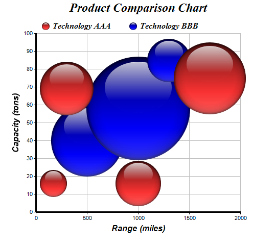

This examples demonstrates a bubble chart using brighter glass spheres as bubbles.
ChartDirector 7.1 (C++ Edition)
3D Bubble Chart (2)

Source Code Listing
#include "chartdir.h"
int main(int argc, char *argv[])
{
// The XYZ points for the bubble chart
double dataX0[] = {170, 300, 1000, 1700};
const int dataX0_size = (int)(sizeof(dataX0)/sizeof(*dataX0));
double dataY0[] = {16, 69, 16, 75};
const int dataY0_size = (int)(sizeof(dataY0)/sizeof(*dataY0));
double dataZ0[] = {52, 105, 88, 140};
const int dataZ0_size = (int)(sizeof(dataZ0)/sizeof(*dataZ0));
double dataX1[] = {500, 1000, 1300};
const int dataX1_size = (int)(sizeof(dataX1)/sizeof(*dataX1));
double dataY1[] = {40, 58, 85};
const int dataY1_size = (int)(sizeof(dataY1)/sizeof(*dataY1));
double dataZ1[] = {140, 202, 84};
const int dataZ1_size = (int)(sizeof(dataZ1)/sizeof(*dataZ1));
// Create a XYChart object of size 540 x 480 pixels
XYChart* c = new XYChart(540, 480);
// Set the plotarea at (70, 65) and of size 400 x 350 pixels. Turn on both horizontal and
// vertical grid lines with light grey color (0xc0c0c0)
c->setPlotArea(70, 65, 400, 350, -1, -1, Chart::Transparent, 0xc0c0c0, -1);
// Add a legend box at (70, 30) (top of the chart) with horizontal layout. Use 12pt Times Bold
// Italic font. Set the background and border color to Transparent.
c->addLegend(70, 30, false, "Times New Roman Bold Italic", 12)->setBackground(Chart::Transparent
);
// Add a title to the chart using 18pt Times Bold Itatic font.
c->addTitle("Product Comparison Chart", "Times New Roman Bold Italic", 18);
// Add titles to the axes using 12pt Arial Bold Italic font
c->yAxis()->setTitle("Capacity (tons)", "Arial Bold Italic", 12);
c->xAxis()->setTitle("Range (miles)", "Arial Bold Italic", 12);
// Set the axes line width to 3 pixels
c->xAxis()->setWidth(3);
c->yAxis()->setWidth(3);
// Add (dataX0, dataY0) as a scatter layer with red (ff3333) glass spheres, where the sphere
// size is modulated by dataZ0. This creates a bubble effect.
c->addScatterLayer(DoubleArray(dataX0, dataX0_size), DoubleArray(dataY0, dataY0_size),
"Technology AAA", Chart::GlassSphere2Shape, 15, 0xff3333)->setSymbolScale(DoubleArray(
dataZ0, dataZ0_size));
// Add (dataX1, dataY1) as a scatter layer with blue (0000ff) glass spheres, where the sphere
// size is modulated by dataZ1. This creates a bubble effect.
c->addScatterLayer(DoubleArray(dataX1, dataX1_size), DoubleArray(dataY1, dataY1_size),
"Technology BBB", Chart::GlassSphere2Shape, 15, 0x0000ff)->setSymbolScale(DoubleArray(
dataZ1, dataZ1_size));
// Output the chart
c->makeChart("threedbubble2.png");
//free up resources
delete c;
return 0;
}